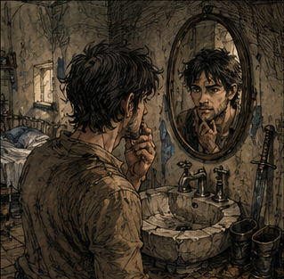
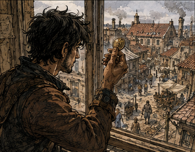
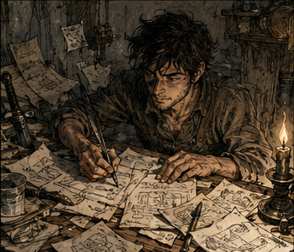

I woke up because my back did not hurt. That was wrong.
Not alarming at first. Wrong. Waking normally involved negotiation. Lower back. Left shoulder. Right knee. The rib that clicked if I slept twisted. None of it terrible. There had simply always been a roll call. This morning, silence. I lay still and waited for the pain to report late.
I flexed my toes. Too easy. I bent one knee, then the other. Nothing objected.
I sat up too quickly and nearly laughed. No stiffness. No hand braced against the mattress while my back decided whether we were doing this. The room was unfamiliar for perhaps half a second. Then it was not. Cheap plaster wall. Narrow bed. Washbasin with a crack running down one side. One chair with a coat thrown over it. My sword leaning against the corner.
The crack in the washbasin caught me first. I remembered cutting my thumb on that crack. Or thought I did. There had been blood, a towel, somebody laughing. Mara? No. The soap thief next door? Possibly. I looked at my thumb. No scar. Wrong hand, maybe. I checked the other. Nothing. I stared at the basin until the memory stopped being a memory and became a question.
Maybe it was not my basin. Cheap rooms repeated themselves. Cheap swords did too. I looked at the sword. There should be a nick near the guard. I crossed the room and turned it toward the window. The nick was there. I had made it trying to split kindling because I had been too lazy to find an axe. I remembered being angry about the damage and continuing to use it on firewood anyway. That was harder to dismiss.
I stopped breathing. "No," I said.
My voice was wrong too. Higher. Not high. Young. I put both hands in front of my face. The skin was wrong. Smooth where it should not have been. No swelling at the knuckles. No pale scar crossing the left palm from the frost-wolf contract. The index finger on my right hand was straight. I bent it. Straight. I bent it again. Still straight.
That finger should have leaned slightly inward. Badly healed fracture. I remembered refusing to have it reset because there had been another descent the next morning. I remembered the healer calling me an idiot. I remembered years of pretending I barely noticed the angle. The memories were clear enough. The finger disagreed with all of them. I got out of bed too fast. My body rose with me instead of sending three separate complaints to management. I crouched. Lower. Stood. Did it again.
"What the fuck?"
I jumped once. That was childish. I did it again. The floorboards creaked. A voice from the other side of the wall shouted, "Some of us are sleeping!" I knew that voice. Or thought I did. I froze. The name would not come. I knew the irritation. I knew I had once shared this wall with somebody. I knew he snored. I knew he borrowed soap and never returned it. Name? Nothing.
That bothered me enough to send me back to the washbasin. The little oval mirror above it was spotted around the edges. I leaned close. The face in it was mine. That was obvious. It was also wrong. Dark hair. Too much of it. No gray. No crease beside the mouth. No scar under the chin. I touched my jaw. The reflection copied me. I opened my mouth. Closed it. Turned my head. Same face. Mine, except far too young.

The missing name next door and the face in the mirror did not fail in the same direction. One memory was incomplete. The other was much too complete. I knew what my face should look like. I also knew I could be wrong about details. That distinction suddenly mattered. Recognition was evidence. It was not proof.
So I made myself slow down. Body first. Room second. Date third. Explanation later. Start with things I could check. If I was dreaming, details might slide. If something magical had altered my body, the room should not have changed with it. If my memory was damaged, the physical objects did not care. I did not need the correct explanation yet. I needed one that survived the next test.
I looked at myself again. Lean. Young. A little underfed. Shoulders I had once considered broad and now recognized as the optimistic beginning of broad. I lifted my shirt. Flat stomach. I had forgotten that. I pressed a thumb against an old injury site. Nothing. My body kept answering the same way.
"Hello," I told the mirror. The boy looked pleased with himself. Apparently some things survived whatever this was. Dream, curse, head injury, some magical effect. None explained everything. An extremely committed brothel also occurred to me and lasted several seconds.
I checked the room for evidence of the last one. No. Too poor. More importantly, staging the room would not explain the hand, the voice, the scars, or why I remembered this place in fragments that felt older than the face looking back at me. I found my trousers. One problem at a time.
Dressing became another test. No stiffness. No careful weight shift. No moment with one hand braced against the chair while my hip decided whether it had an opinion. I pulled on one boot and stopped. Cheap leather. Hard sole. Badly stitched heel. No waterproofing worth the word. I remembered this kind of boot. Mine. Early. Not necessarily this exact pair. I searched the coat. Three copper. A bent lockpick I had no business owning. A Bronze guild token. I sat down. The token lay in my palm.
Bronze. For a long moment, I stared at the token like it had personally insulted me. Then I laughed. "Bronze."
The laughter turned strange in the middle. Not sadness. Not yet. Disbelief.
Another token existed in my memory: black enamel over star-metal, heavy enough that new adventurers sometimes asked if it was ceremonial. Seven people in the world had held that rank when I finally reached it. I could see the thing in my hand and remember the weight of the other one. Both memories insisted they belonged to me. Fine. The Bronze token was here. Start there.
I turned it over. Scratched initials on the back. Mine. Current, or at least physically present. I went to the window. Carrow. I knew the street. The street did not quite match itself. The southern row of shops was missing. The guild roof still had old red tiles. A chimney stood where I remembered a three-story apothecary. I checked one landmark, then another. Familiar. Wrong. Not random wrong. Earlier wrong.

That was too large a thought. I backed away from it. Window later. Room now. I opened the wardrobe. Two shirts. One coat. Training leathers. Sword belt. Warrior gear. I closed the wardrobe. Opened it again. Still warrior gear. Bronze gave me one boundary. Warrior gear gave me another. Whatever explanation I eventually accepted had to account for me owning the equipment from a part of my life I remembered as finished.
I tried the smaller question. When had I still been doing this? Warrior first. Magic later. I could remember the order much better than the dates. Twenty-four? Twenty-five when I finally stopped pretending the sword was going to become more than it was? The answer came with the uncomfortable fuzziness of a story I had retold too many times. Useful. Not enough.
I pulled the sword from the corner. Cheap steel. One-handed. Balanced badly toward the tip. I remembered loving it. That annoyed me. I swung once, careful of the ceiling. Feet. Shoulder. Wrist. The movement came back from somewhere deeper than recollection. Not excellent. Never excellent. Competent. The body knew the weapon too.
"I was still doing this." The sentence helped. It did not explain the room. It gave me another boundary. I was young enough that I still expected to become a warrior. That meant before magic. Before support. Before Barrier.
Barrier. For one stupid moment, I remembered the clean version. I became a support mage at twenty-five because I finally understood what I was. Elegant. Very professional. The sort of sentence somebody would put beneath a portrait. I stared at the sword.
"Wait a second." That was not how it happened. There had been jokes. Taverns. A ridiculous fashion. Everybody learning Barrier because someone had discovered that the cheapest defensive spell in the guild curriculum had a use considerably more popular than stopping goblins. Sex.
I sat down again. "Oh, for fuck's sake."
History had improved the story. I had not discovered magic because I was called by destiny. I had learned Barrier because I wanted a cleaner, easier way to avoid making babies. And I had been good at it. No. I frowned. That was the polished version too. My first Barrier had been garbage. Thin. Uneven. Flickered at the edge.
The strange part was not that I cast a perfect spell. The strange part was that once someone corrected me, I rarely made the same mistake twice. Then I started correcting things nobody had pointed out. Then changing things just to see what happened. For months, I thought that was normal because Barrier was supposed to be easy.
And there was another correction buried inside that memory. I had spent years telling people I discovered a gift for support magic. That was not quite true either. I discovered a gift for understanding systems that happened to express itself through magic. Barrier was merely the first system simple enough for me to see all the moving parts at once.
That memory gave me another date marker and also proved why memory was dangerous. I could remember the lesson and still misremember the story around it. Younger than twenty-five, then. Probably. My face said much younger. The Bronze token agreed. The city outside was starting to agree too. But all of that was chronology. There was a smaller test sitting right in front of me.
Magic. If I was merely remembering my body wrong, mana should still answer the way I remembered. If something had changed me, maybe the response would tell me how. I closed my eyes and reached for the old internal sensation. Not Barrier. Nothing ambitious. Just enough response to know what was there. In memory, the motion was as ordinary as flexing a hand. Here, I got a headache and a faint tingling in my palm. I stopped immediately. "Shit."
Expected: mana. Actual: almost nothing. That did not tell me why. Injury, interference, an untrained body, something stranger. Fine. The useful part was the mismatch. My memories knew how to do something this body apparently did not. Another contradiction, not an answer. I put the sword across my knees and let the largest possibility sit there without naming it. Either an absurd amount of my past had been rebuilt around me, including my body, or I was somehow standing inside an earlier version of my own life. Both explanations were ridiculous. One was beginning to require fewer exceptions. "Check," I said, and searched the desk. Old guild notices. Receipts. A letter from somebody whose handwriting I recognized before the name. Maren. No. Mara? I unfolded it. Mara. The date at the top meant almost nothing by itself. I found a guild notice and compared them.
Then another notice. Then another. I counted backward from something I did remember clearly: the siege of East Verrel, famous enough that nobody who lived through the next forty years forgot the year. The arithmetic gave me a number. I did it again.
Nineteen.
"You're kidding." One document could be wrong. Three could share the same calendar. I checked the guild token issue date. Nineteen. I checked the letter again. Nineteen.
The room. The sword. Bronze. The old roof tiles. The missing apothecary. The face. The straight finger. Nineteen. The memories on the other side of those facts did not disappear. The crooked finger belonged to fifty-eight. The body in the mirror belonged to nineteen. I did not know how both could be mine. I knew they were.
I stood very slowly. Then grinned. Somehow, impossibly, I was back at nineteen with the rest of my life still in my head. Call the mechanism a curse, a miracle, time displacement, divine stupidity, whatever survived checking later. The mechanism could wait. The result could not. I laughed again, and this one came from somewhere wild. I had decades back. A whole second life. For perhaps five minutes, I did nothing intelligent. I stretched. Ran in place. Touched my hair. Checked my teeth. Looked at myself in the mirror twice more. There were other observations I will leave to the dignity of historical record, except to say that nineteen-year-old bodies are aggressively enthusiastic about being nineteen.
"Outstanding," I told the mirror. The mirror agreed. Then I thought of my mother. The joy stopped. Not because I expected her to be downstairs. I knew better. I thought I knew better. Memory can be cruel when hope gets involved. I sat at the desk and forced myself to calculate. My parents had died before nineteen. Both. Years before.
The reset had not gone far enough. I sat there for a while. No miracle there. No reunion. No impossible knock on the door. Good. Not good. Clear. I needed clear. I found paper.
Paper helped. Paper made impossible things administrative. Once something could be written beneath a heading, it became a problem instead of an omen. I had built campaigns that way. Businesses too. Relationships, less successfully. People generally disliked discovering they had become a column in one of my plans.
That thought made me wonder who I had been seeing at nineteen. Someone. Probably several someones if I was being charitable toward my younger self's ambition and uncharitable toward his judgment. I could not remember. That was alarming for about half a second, then merely embarrassing. Apparently I remembered wars better than women who had once seen me naked. There was a lesson in that somewhere. I declined to find it.
At the top I wrote: WHAT DO I KNOW?
Then beneath it: WHAT DO I THINK I KNOW?
Then: WHAT CAN I VERIFY?
I stared at those headings. "Very professional."
Under KNOW, I wrote the siege of East Verrel. The Red Winter. The collapse of the Northern Gate. Three names that would eventually become famous. A war. A plague. Then I stopped. I knew those things had happened. I did not know, without checking, whether I had the years right, whether I was remembering the first cause or the version everyone repeated later, or whether one of those famous names was currently a child. KNOW was already becoming a narrower category than I wanted. I paused. People.
Who was alive now? Who was already important? Who was still nobody? Who had I known personally? Who had I only known by reputation? I wrote a separate heading: PEOPLE WHO MATTER.
I hated the heading immediately. Too honest. I left it.
Alive was the strange word. My mind kept sorting people into dead and not-dead using information that had not happened yet. A man could be eating breakfast three streets away while my first instinct labeled him dead. A woman I remembered at sixty might currently be twelve. Someone I had mourned for thirty years might not have made the decision that killed them yet. That was not useful information in the clean way I wanted it to be. It was emotional contraband.
Then another thought arrived. What about the people I had never met because they died before I became important enough to cross their path? Historians had names. Guild records had names. Disasters had casualty lists. There might be brilliant people walking around right now whose only historical contribution, in my memory, was dying too early. I wrote a fourth heading before I could talk myself out of it: PEOPLE I MISSED.
Who had died before I ever met them? I started writing names and crossing them out. Soren. Did I know Soren yet? No. Maybe. I remembered Soren at thirty-something. Scar on the left arm. Laugh like gravel. Hated pears. I could see the scar more clearly than I could place the year. That was apparently how this was going to work.
Had he always hated pears? Why did I remember that? Did it matter? Probably not. I wrote: SOREN - LATER IMPORTANT. CURRENTLY ?
Then Mira. I stared at the name. Did I know her at nineteen? No. I did not think so. That was not the same as no. Future Mira existed in my head with the dangerous confidence of somebody I had known too well; the beginning of that memory was mostly missing. Current Mira, wherever she was, might be a child. Or in another city. Or someone entirely unlike the person I remembered. I wrote: MIRA - DO NOT ASSUME.
That felt useful. Then I looked at the list again. Too many names. Too many ghosts who were not ghosts anymore. I imagined walking into a room, seeing some young idiot, and realizing he would eventually command armies. Or ruin a kingdom. Or save one.
Would I tell him? Would I help? Would I use him? That answer came too quickly. Of course I would use him. I set the charcoal down. "Excellent." Second chance. Same bastard. I made another heading: MISTAKES.
That list came faster. Too fast. A party I abandoned. A contract I took because I wanted the money and pretended it was strategy. A healer I pushed until she collapsed because I knew she could do more. A swordsman I kept angry because he fought better angry. People I had lied to because the lie made them useful. People who died because they trusted me. People who survived because they trusted me.
That was the ugly part. My methods had worked often enough to become philosophy. I stopped writing. S-class Greg had not been a saint. He had been useful. Extremely useful. Those are not the same thing. I stood and walked to the window again. A boy crossed the street below carrying a bundle of rope. I watched him too long.
Did I know him? No. Maybe. His face triggered nothing. I still tracked him until he disappeared around the corner. That was going to become a problem. Every person now came with a question.
Who are you? Did you matter? Did I know you? Did you die? Did you become somebody? Did I make you into something? Did you make me? The boy looked up once before turning the corner. Caught me staring. He frowned. I waved. He walked faster.
"Fair."
I returned to the desk. Now career. What had I actually been doing at nineteen? Warrior. Bronze. Slow. That much felt solid. The order around it did not.
Slow. I remembered the shape of those years more than the sequence. Training. Cheap contracts. Trying to become stronger through repetition because that was what warriors did. Getting marginally better. Then more marginally better. Then discovering at twenty-five that I had spent years pushing the wrong door. Twenty-five felt right. Probably. I almost wrote it under KNOW, reconsidered, and left it under THINK. I should skip those years. Obviously. Magic now. Barrier now. Support now. Except I had already tried the smallest magical test I knew, and this body had answered with a headache and a tingling palm.
That mattered. I understood the theory more deeply than some professors ever would, but understanding was not capacity. My channels had not been trained. My body had not spent six years accumulating the foundation that made Barrier possible. The morning had given me one result, not permission to pretend the problem was solved. Knowledge was not embodiment. Annoying.
Could I accelerate the magical foundation? Probably. How much? Unknown. I wrote: MANA CONDITIONING - START NOW.
Then: WARRIOR YEARS - MOSTLY SKIP.
I paused. Mostly. Those years had not been entirely wasted. Warrior Greg had learned how fighters moved. How shields failed. How fear changed timing. How much a man could hear while somebody tried to cut his head off. Later, support Greg had known what frontliners needed because he had spent years being a mediocre one. I crossed out MOSTLY SKIP and wrote: KEEP USEFUL PARTS. Better.
Then money. Money was easy. I wrote that confidently. Then stared at the page. Was it? The confidence had arrived before the evidence. That was becoming familiar.
What exactly did I remember that made money today? Not eventually. Today. The Red Winter was decades away. Antonius Vale's rise was useless without access. A famous mana crystal shortage happened... when? I frowned. No idea. A shipping company became huge because of something involving southern grain. Was that this decade? Later? I could remember the company logo. Not the date. Apparently memory had retained the parts that made good stories and discarded the parts useful for buying lunch.
"Wonderful." Forty years of future knowledge and I could not remember next week's price of onions. That was probably healthy. I leaned back.
Wrong question. What happens tomorrow? Bad question. What becomes valuable later, and why? Better.
That I could answer. Or thought I could. Infrastructure. Mana access. Certain dungeon materials people currently treated as waste. Specific institutions. Certain people. Support training itself, eventually. I began another list. Then another. The desk disappeared beneath paper. Halfway down one page I moved an item from KNOW to THINK. Two lines later I moved another from THINK to CHECK. Some ideas were memory. Some were inference built on memory. Some were probably complete bullshit wearing a familiar face. I marked them differently: KNOW. THINK. CHECK.

By midday, I had a plan. A sensible plan. It would take perhaps twelve years. I stared at twelve. Too long. I started cutting. I did not need to learn warrior lessons twice. Ten. I knew which guild paths were dead ends. Nine. I knew which kinds of teachers mattered. Eight. I could begin mana conditioning early. Seven. Certain introductions could happen years sooner. Six. I stared at six. The number irritated me.
"Five." I wrote it. The room offered no encouragement. Five years to reach the beginning of what had taken me decades. Ridiculous. Aggressive. Possible? Maybe. That was enough.
The first bottleneck was capital.
Capital immediately made me think of equipment. Equipment made me think of enchanted steel. Enchanted steel made me remember how obscenely cheap early mana-conductive alloys had once been before military procurement discovered them. For three glorious seconds I thought I had found my fortune. Then I tried to place the alloy in time and remembered the irritating part: it had not been invented yet. Probably. I chased the memory backward and got a workshop smell, a military procurement argument, and no inventor. I wrote it down anyway. Not as an investment. Under CHECK. Could it be invented early? By whom? Did I remember enough to point somebody toward it? Probably not. Still, the page gained another branch.
This was the danger and the opportunity. I did not have one future. I had forty years of loose threads, and pulling any one of them might lead to money, catastrophe, or a memory of a dinner conversation that had never been important in the first place.
That gave the plan an order. First, get enough money that I could stop selling my days one cheap contract at a time. Second, use that money to buy training, food, equipment, and access while I started conditioning mana years early. Third, verify the pieces of the future I actually remembered before betting on them. Only after that did I get to play with famous names, wars, guild politics, or any of the grand nonsense my older self had once moved through. I did not need to rebuild sixty-year-old Greg today. I needed to make nineteen-year-old Greg harder to trap tomorrow.
Nineteen-year-old Greg had three copper. Sixty-year-old Greg knew what money could do. Better food. Training. Equipment. Travel. Access. Time. Most importantly, options. I did not want wages. I wanted leverage. The obvious answer was borrowing. The sensible answer was borrowing a little. I wrote a number. Looked at it. Crossed it out. Wrote a larger one. Crossed that out. Then wrote an amount so offensive that I laughed.
"Reasonable." It was not. I knew a lender. Or rather, I knew what he became. Present version? Unknown. Current habits? Unknown. How much he would lend an arrogant nineteen-year-old Bronze warrior with three copper? Probably nothing. Still. That was a present problem. Present problems could be worked. I folded the papers. Then unfolded them and removed PEOPLE WHO MATTER. Too incriminating. Then put it back.
If I was going to become the same manipulative bastard again, hiding the list from myself would not help. I looked once more at the mirror. Young. Alive. Unfinished. The old life felt impossibly far away and uncomfortably close. I had no reputation. No magic. No network. No proof.
Just forty years of experience, a nineteen-year-old body, a Bronze badge, and the deeply irritating conviction that this was still more than enough. Good work, Greg. I grabbed the coat. Then went looking for money.